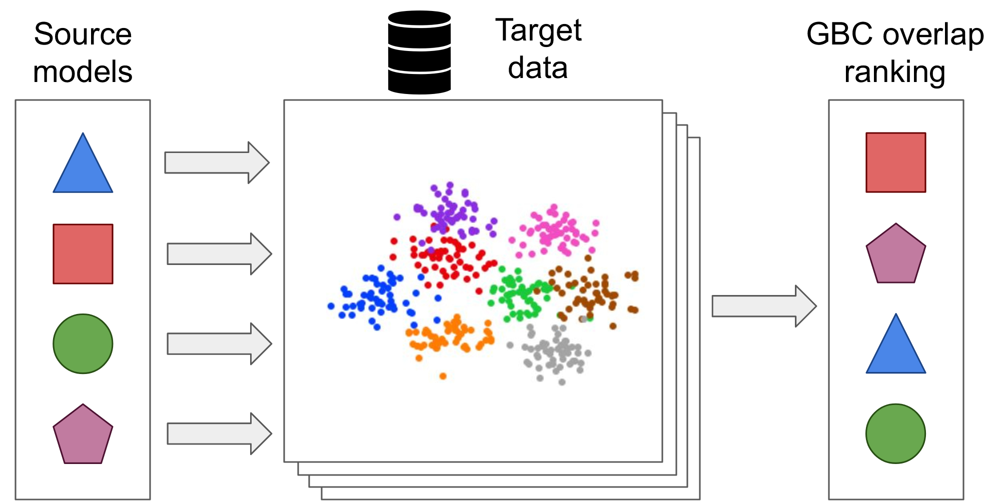
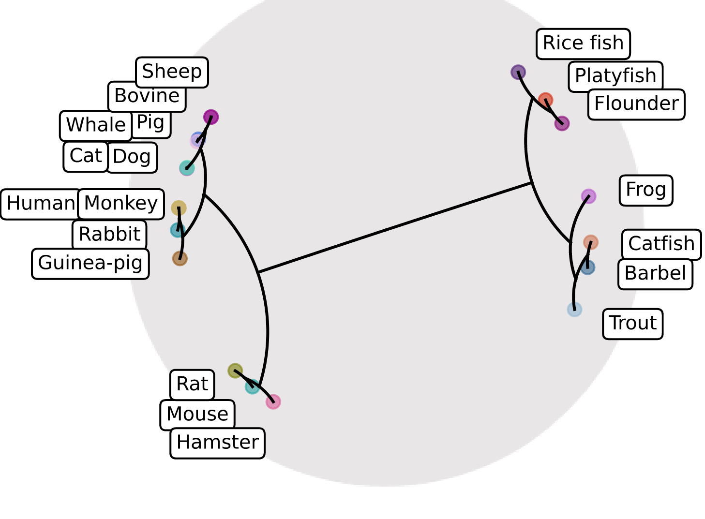
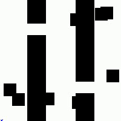

|
I am an incoming ML Engineer at Waymo . I will join Prof. Shimon Whiteson 's team to work on self-driving cars. I earned my master's in computer science from the University of Cambridge supervised by Prof. Pietro Liò and Prof. Jure Leskovec. During my master's, I worked on problems related to representation learning. I did my bachelor's in computer science at Imperial College London where I worked on unsupervised learning for robotics under the supervision of Dr. Ronald Clark. I also had the pleasure to spend two summers as an intern at Google Research and one at Facebook AI Research. At Google Research, I devised methods for quickly estimating how easily models will adapt to novel domains with Dr. Thomas Mensink and Dr. Vittorio Ferrari, and I tried to break video games using reinforcement learning with Dr. Olivier Bachem. At Facebok AI Research, I helped build sparse convolutional networks with Dr. Benjamin Graham. Email / CV / Google Scholar / Twitter / Github |
{kind=link}
|
I'm interested in reinforcement learning, robotics, and representation learning. I'm particularly excited about research in lifelong robot learning, methods that adapt to constantly changing real-world environments. |
|  |
Michal Pándy, Andrea Agositnelli, Jasper Uijlings, Vittorio Ferrari, Thomas Mensink arXiv, 2021 bibtex We present GBC, a fast and stable approach for estimating how well will classifiers transfer to new domains. |
|  |
Gabriele Corso, Rex Ying, Michal Pándy, Petar Veličković, Jure Leskovec, Pietro Liò NeurIPS, 2021 bibtex NeuroSEED embeds biological sequences in hyperbolic embedding spaces and solves many useful downstream bioinformatics tasks. |
|  |
Michal Pándy, Gabriele Corso, Rex Ying, Petar Veličković, Jure Leskovec, Pietro Liò NeurIPS 2021 Physical Reasoning and Inductive Biases for the Real World workshop, 2021 drone demo / poster PHIL presents a novel approach for learning graph search heuristics and outperforms related methods on benchmark search problems. |

|
Michal Pándy, Daniel Lenton, Ronald Clark ICRA Machine Learning for Motion Planning workshop, 2021 (Oral Presentation) IROS, 2021 project website / bibtex We develop a method for training learning-based planners supervised by scene geometries. Our approach outperforms methods supervised by optimal trajectories and is a useful pre-training step in high dimensional problems. |
|
Website adapted from Jon Barron's repo. Give it star if you like it! :) |